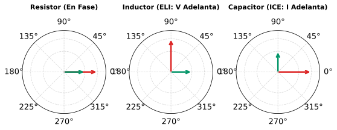

Guía Práctica de Análisis Fasorial y Álgebra de Números Complejos
Método del Carril Táctil, transformación temporal-frecuencial y operaciones en el plano complejo
En el análisis de circuitos en Corriente Alterna (CA) bajo régimen sinusoidal permanente, la notación fasorial permite transformar ecuaciones íntegro-diferenciales en el dominio del tiempo a simples ecuaciones algebraicas lineales en el dominio de la frecuencia.
1 El Mapa de Razonamiento Ampliado: El “Carril Táctil”
Para resolver circuitos de corriente alterna sin cometer errores algebraicos o de desfase, se establece la secuencia causal obligatoria del Carril Táctil:
① Señal v(t) Identificar la amplitud, frecuencia angular \omega y desfase inicial \phi.
② Forma Coseno Convertir la señal a la forma canónica +V_m \cos(\omega t + \phi).
③ Fasor \mathbf{V} Extraer la magnitud (pico o RMS) y el ángulo: \mathbf{V} = V \angle \phi.
④ Operaciones Conmutar entre forma rectangular (sumas) y polar (productos/divisiones).
Cadena Causal: Dominio del Tiempo v(t) \longrightarrow Forma Coseno Canónica \longrightarrow Fasor Polar \mathbf{V} = V_m \angle \phi \longrightarrow Operaciones en el Plano Complejo.
2 Conceptos Fundamentales
2.1 ¿Qué es realmente un fasor? (La foto instantánea en t = 0\text{ s})
Un fasor no es un vector estático ordinario. Representa un vector radial en rotación constante (sinor) que gira en sentido antihorario con velocidad angular constante \omega (\text{rad/s}).
El diagrama fasorial es la “foto instantánea” tomada exactamente en t = 0\text{ s}:
Ecuación Base: \mathbf{V} = V_m \angle \phi \quad \Longleftrightarrow \quad v(t) = \text{Re}\left\{ \mathbf{V} e^{j\omega t} \right\} = V_m \cos(\omega t + \phi)

Esta regla se aplica a los circuitos puramente inductivos (bobinas).
- E: Representa la fuerza electromotriz o Voltaje (V).
- L: Representa la Inducción o Inductor.
- I: Representa la Corriente.
Significado: En un inductor, la E (Voltaje) va antes que la I (Corriente). Por lo tanto, el voltaje adelanta a la corriente por 90^\circ (o la corriente atrasa al voltaje por 90^\circ).
En diagramas fasoriales: - Si la corriente es tu referencia: \mathbf{I} = I \angle 0^\circ - El voltaje será: \mathbf{V}_L = V_L \angle 90^\circ
Matemáticamente: V_L = j \cdot X_L \cdot I (el operador imaginario +j rota el fasor 90^\circ hacia arriba / en sentido antihorario).
Esta regla se aplica a los circuitos puramente capacitivos (condensadores).
- I: Representa la Corriente.
- C: Representa el Capacitor.
- E: Representa la fuerza electromotriz o Voltaje (V).
Significado: En un capacitor, la I (Corriente) va antes que la E (Voltaje). Por lo tanto, la corriente adelanta al voltaje por 90^\circ (o el voltaje atrasa a la corriente por 90^\circ).
En diagramas fasoriales: - Si la corriente es tu referencia: \mathbf{I} = I \angle 0^\circ - El voltaje será: \mathbf{V}_C = V_C \angle -90^\circ
Matemáticamente: V_C = -j \cdot X_C \cdot I (el operador -j rota el fasor 90^\circ hacia abajo / en sentido horario).

Dado que todas las fuentes en un circuito lineal en estado estable operan a la misma frecuencia angular \omega, congelar la referencia temporal en t = 0 elimina la variable temporal t y permite resolver redes eléctricas mediante álgebra compleja.
2.2 Valor Pico (V_m) frente a Valor Eficaz (V_{rms})
En el análisis teórico de circuitos se utiliza comúnmente el valor pico (V_m). Sin embargo, los instrumentos de medición reales (multímetros, osciloscopios en modo AC, vatímetros) registran valores eficaces (RMS):
\mathbf{V}_{rms} = V_{rms} \angle \phi = \left( \frac{V_m}{\sqrt{2}} \right) \angle \phi \approx 0.7071 \, V_m \angle \phi
2.2.1 Ejemplo de conversión:
v(t) = 120 \cos(\omega t + 30^\circ) \text{ V} - Fasor en valor pico: \mathbf{V}_{pico} = 120 \angle 30^\circ \text{ V} - Fasor en valor eficaz (RMS): \mathbf{V}_{rms} = 84.85 \angle 30^\circ \text{ V}
2.3 Conversión Seno \to Coseno (Regla de los 90^\circ)
La referencia canónica del fasor se basa estrictamente en la función coseno positivo. Cuando una señal temporal se presenta en función seno o con signo negativo, se traslada mediante las siguientes identidades:
| Función Temporal Original | Equivalencia Canónica en Coseno | Regla de Ajuste de Fase |
|---|---|---|
| \sin(\omega t + \theta) | \cos(\omega t + \theta - 90^\circ) | Restar 90^\circ |
| -\sin(\omega t + \theta) | \cos(\omega t + \theta + 90^\circ) | Sumar +90^\circ |
| -\cos(\omega t + \theta) | \cos(\omega t + \theta \pm 180^\circ) | Sumar o restar 180^\circ |
2.3.1 Ejemplo práctico:
Sea la corriente i(t) = -4 \sin(10t + 15^\circ)\text{A}:
1. Aplicamos la regla: -4\sin(\theta) = 4\cos(\theta + 90^\circ).
2. i(t) = 4 \cos(10t + 15^\circ + 90^\circ) = 4 \cos(10t + 105^\circ)\text{ A}.
3. Fasor resultante: \mathbf{I} = 4 \angle 105^\circ\text{A}. ✅
3 Álgebra de Números Complejos y Ajuste de Cuadrantes
Un número complejo en el plano de Gauss se representa en tres formas interconvertibles:
- Forma Rectangular: \mathbf{z} = x + j y (ideal para sumas y restas)
- Forma Polar: \mathbf{z} = r \angle \theta (ideal para multiplicaciones, divisiones y potencias)
- Forma Exponencial: \mathbf{z} = r e^{j\theta}
r = \sqrt{x^2 + y^2}, \quad \theta = \arctan\left(\frac{y}{x}\right)
x = r \cos\theta, \quad y = r \sin\theta
3.1 Reglas Rigurosas de Ajuste Angular por Cuadrante
La función \arctan estándar de las calculadoras únicamente devuelve valores en el rango [-90^\circ, +90^\circ]. Para determinar el ángulo correcto según la posición del punto (x, y):
| Cuadrante | Signos (x, y) | Intervalo Angular | Fórmula de Ajuste |
|---|---|---|---|
| I | (+x, +y) | 0^\circ < \theta < 90^\circ | \theta = \arctan\left(\frac{y}{x}\right) |
| II | (-x, +y) | 90^\circ < \theta < 180^\circ | \theta = 180^\circ - \arctan\left(\left|\frac{y}{x}\right|\right) |
| III | (-x, -y) | -180^\circ < \theta < -90^\circ | \theta = -180^\circ + \arctan\left(\left|\frac{y}{x}\right|\right) |
| IV | (+x, -y) | -90^\circ < \theta < 0^\circ | \theta = -\arctan\left(\left|\frac{y}{x}\right|\right) |

4 Operaciones Fundamentales en el Plano Complejo
4.1 Racionalización y el Inverso de j
En el cálculo de impedancias capacitivas, la unidad imaginaria j = \sqrt{-1} aparece con frecuencia en el denominador. Racionalizamos multiplicando por j/j:
\frac{1}{j} = \frac{1 \cdot j}{j \cdot j} = \frac{j}{j^2} = \frac{j}{-1} = -j
\frac{1}{j \omega C} = -j \frac{1}{\omega C}
4.2 División por el Complejo Conjugado
Para dividir en forma rectangular, se multiplica por el conjugado del denominador \mathbf{z}^* = c - jd:
\frac{a + jb}{c + jd} = \frac{(a + jb)(c - jd)}{(c + jd)(c - jd)} = \frac{(ac + bd) + j(bc - ad)}{c^2 + d^2}
5 Impedancias Complejas de Elementos Pasivos (R, L, C)
La relación entre tensión fasorial y corriente fasorial en elementos lineales se expresa mediante la Ley de Ohm Generalizada:
\mathbf{V} = \mathbf{I} \cdot \mathbf{Z}
| Elemento Pasivo | Ecuación Temporal | Impedancia Fasorial \mathbf{Z} | Ángulo de Desfase (\theta_v - \theta_i) |
|---|---|---|---|
| Resistor (R) | v(t) = R \, i(t) | \mathbf{Z}_R = R = R \angle 0^\circ | 0^\circ (Tensión y corriente en fase) |
| Inductor (L) | v(t) = L \frac{di(t)}{dt} | \mathbf{Z}_L = j\omega L = \omega L \angle 90^\circ | +90^\circ (Tensión adelanta a la corriente 90^\circ) |
| Capacitor (C) | i(t) = C \frac{dv(t)}{dt} | \mathbf{Z}_C = \frac{1}{j\omega C} = \frac{1}{\omega C} \angle -90^\circ | -90^\circ (Tensión atrasa a la corriente 90^\circ) |
6 Resumen de Reglas Mnemotécnicas y Propiedades de j
6.0.1 Ciclo y Potencias de j (Operador de Giro):
- j^0 = 1 = 1 \angle 0^\circ (Eje Real +, referencia).
- j^1 = j = 1 \angle 90^\circ (Giro antihorario +90^\circ).
- j^2 = -1 = 1 \angle 180^\circ (Inversión de fase / signo menos).
- j^3 = j^2 \cdot j = -j = 1 \angle -90^\circ (Giro horario -90^\circ).
- j^4 = (j^2)^2 = 1 = 1 \angle 0^\circ (Ciclo cerrado cada 4 potencias).
- \frac{1}{j} = -j = 1 \angle -90^\circ (Inverso de j).
- -\frac{1}{j} = \frac{1}{-j} = j = 1 \angle 90^\circ.
6.0.2 Reglas Mnemotécnicas en Circuitos:
- ELI (Inductor L): La Tensión (E) adelanta a la Corriente (I) en +90^\circ.
\mathbf{Z}_L = +j\omega L = \omega L \angle +90^\circ. - ICE (Capacitor C): La Corriente (I) adelanta a la Tensión (E) en +90^\circ (el voltaje atrasa -90^\circ).
\mathbf{Z}_C = \frac{1}{j\omega C} = -j \frac{1}{\omega C} = \frac{1}{\omega C} \angle -90^\circ.
6.0.3 Operaciones Algebraicas Fundamentales:
- Suma / Resta: Exclusivamente en coordenadas rectangulares (a + jb).
- Multiplicación: r_1 \angle \theta_1 \cdot r_2 \angle \theta_2 = (r_1 r_2) \angle (\theta_1 + \theta_2).
- División: \frac{r_1 \angle \theta_1}{r_2 \angle \theta_2} = \left(\frac{r_1}{r_2}\right) \angle (\theta_1 - \theta_2).
- Conjugado: (a + jb)^* = a - jb \Longleftrightarrow (r \angle \theta)^* = r \angle (-\theta).
- Racionalización directa: \frac{1}{a + jb} = \frac{a - jb}{a^2 + b^2}.
6.0.4 Conversión Trigonométrica Inmediata:
- +\sin(\omega t + \phi) \longrightarrow \cos(\omega t + \phi - 90^\circ) (\mathbf{V} = V_m \angle (\phi - 90^\circ)).
- -\sin(\omega t + \phi) \longrightarrow \cos(\omega t + \phi + 90^\circ) (\mathbf{V} = V_m \angle (\phi + 90^\circ)).
- -\cos(\omega t + \phi) \longrightarrow \cos(\omega t + \phi \pm 180^\circ) (\mathbf{V} = V_m \angle (\phi \pm 180^\circ)).
- -r \angle \theta = r \angle (\theta \pm 180^\circ) (Amplitud r > 0 siempre).
7 Ejercicios Resueltos Paso a Paso
Enunciado: a) Transformar al dominio fasorial (valor pico y valor eficaz RMS): v(t) = 7\cos(2t + 40^\circ)\text{ V}, \qquad i(t) = -4\sin(10t + 10^\circ)\text{ A} b) Obtener la función temporal v_2(t) e i_2(t) a partir de los fasores (\omega = 50\text{ rad/s}): \mathbf{V}_2 = -25\angle 40^\circ\text{ V}, \qquad \mathbf{I}_2 = j(12 - j5)\text{ A}
Parte (a): 1. Voltaje v(t): Ya se encuentra en forma canónica coseno positivo: - Amplitud pico: V_m = 7\text{ V}, Fase: \phi = 40^\circ, Frecuencia: \omega = 2\text{ rad/s}. - Fasor pico: \mathbf{V} = 7\angle 40^\circ\text{ V}. - Fasor RMS: \mathbf{V}_{rms} = \frac{7}{\sqrt{2}}\angle 40^\circ \approx 4.95\angle 40^\circ\text{ V}.
- Corriente i(t): Aplicamos la regla -\sin(\theta) = \cos(\theta + 90^\circ): i(t) = 4\cos(10t + 10^\circ + 90^\circ) = 4\cos(10t + 100^\circ)\text{ A}
- Fasor pico: \mathbf{I} = 4\angle 100^\circ\text{ A}.
- Fasor RMS: \mathbf{I}_{rms} = \frac{4}{\sqrt{2}}\angle 100^\circ \approx 2.83\angle 100^\circ\text{ A}.
Parte (b): 1. Fasor \mathbf{V}_2 = -25\angle 40^\circ\text{ V}: Como la amplitud debe ser estrictamente positiva (r > 0), invertimos fase sumando o restando 180^\circ: \mathbf{V}_2 = 25\angle(40^\circ - 180^\circ) = 25\angle -140^\circ\text{ V} v_2(t) = 25\cos(50t - 140^\circ)\text{ V}
- Fasor \mathbf{I}_2 = j(12 - j5)\text{ A}: Multiplicamos el operador j (j^2 = -1): \mathbf{I}_2 = j12 - j^2(5) = 5 + j12\text{ A}
- Magnitud: I_m = \sqrt{5^2 + 12^2} = 13\text{ A}.
- Ángulo (Cuadrante I): \theta = \arctan(12/5) = 67.38^\circ. \mathbf{I}_2 = 13\angle 67.38^\circ\text{ A} \quad \Longrightarrow \quad i_2(t) = 13\cos(50t + 67.38^\circ)\text{ A}
Enunciado: Evaluar y expresar en forma rectangular y polar la siguiente expresión fasorial: \mathbf{X} = \left[ (5 + j2)(-1 + j4) - 5\angle 60^\circ \right]^*
Multiplicación de binomios rectangulares: (5 + j2)(-1 + j4) = 5(-1) + 5(j4) + (j2)(-1) + j^2(8) = -5 + j20 - j2 - 8 = -13 + j18
Conversión polar a rectangular de 5\angle 60^\circ: 5\angle 60^\circ = 5\cos(60^\circ) + j5\sin(60^\circ) = 2.5 + j4.330
Resta de números complejos (real con real, imaginario con imaginario): (-13 + j18) - (2.5 + j4.330) = (-13 - 2.5) + j(18 - 4.330) = -15.5 + j13.670
Aplicar conjugado complejo (*): \mathbf{X} = (-15.5 + j13.670)^* = -15.5 - j13.670
Conversión final a forma polar (Ajuste de Cuadrante III: x < 0, y < 0):
- Módulo: r = \sqrt{(-15.5)^2 + (-13.670)^2} = \sqrt{240.25 + 186.87} \approx 20.67
- Ángulo: \theta = -180^\circ + \arctan\left(\left|\frac{-13.670}{-15.5}\right|\right) = -180^\circ + 41.41^\circ = -138.59^\circ
\mathbf{X} = -15.5 - j13.67 = 20.67\angle -138.59^\circ
Enunciado: Un circuito serie compuesto por una resistencia R = 30\,\Omega, un inductor L = 50\text{ mH} y un capacitor C = 25\,\mu\text{F} se alimenta con una fuente de tensión: v(t) = 120\cos(1000t + 30^\circ)\text{ V} Calcular: 1. La impedancia equivalente total \mathbf{Z}_{total}. 2. La corriente en estado estable \mathbf{I} e i(t). 3. Las tensiones fasoriales en cada elemento pasivo (\mathbf{V}_R, \mathbf{V}_L, \mathbf{V}_C).
- Cálculo de reactancias e impedancias (\omega = 1000\text{ rad/s}):
- Reactancia inductiva: X_L = \omega L = 1000 \cdot 0.050 = 50\,\Omega \quad \Longrightarrow \quad \mathbf{Z}_L = +j50\,\Omega.
- Reactancia capacitiva: X_C = \frac{1}{\omega C} = \frac{1}{1000 \cdot 25 \times 10^{-6}} = 40\,\Omega \quad \Longrightarrow \quad \mathbf{Z}_C = -j40\,\Omega.
- Impedancia total serie: \mathbf{Z}_{total} = R + j(X_L - X_C) = 30 + j(50 - 40) = 30 + j10\,\Omega \mathbf{Z}_{total} = \sqrt{30^2 + 10^2}\angle \arctan(10/30) = 31.62\angle 18.43^\circ\,\Omega
- Cálculo de la corriente fasorial \mathbf{I} (Ley de Ohm):
- Fasor de tensión: \mathbf{V} = 120\angle 30^\circ\text{ V}. \mathbf{I} = \frac{\mathbf{V}}{\mathbf{Z}_{total}} = \frac{120\angle 30^\circ}{31.62\angle 18.43^\circ} = \left(\frac{120}{31.62}\right)\angle (30^\circ - 18.43^\circ) = 3.80\angle 11.57^\circ\text{ A} i(t) = 3.80\cos(1000t + 11.57^\circ)\text{ A}
- Caídas de tensión individuales:
- \mathbf{V}_R = \mathbf{I} \cdot R = (3.80\angle 11.57^\circ)(30\angle 0^\circ) = 114.0\angle 11.57^\circ\text{ V}.
- \mathbf{V}_L = \mathbf{I} \cdot \mathbf{Z}_L = (3.80\angle 11.57^\circ)(50\angle 90^\circ) = 190.0\angle 101.57^\circ\text{ V} (Adelanta 90^\circ a \mathbf{I}).
- \mathbf{V}_C = \mathbf{I} \cdot \mathbf{Z}_C = (3.80\angle 11.57^\circ)(40\angle -90^\circ) = 152.0\angle -78.43^\circ\text{ V} (Atrasa 90^\circ a \mathbf{I}).
(Verificación LVK: \mathbf{V}_R + \mathbf{V}_L + \mathbf{V}_C = 114.0\angle 11.57^\circ + 190.0\angle 101.57^\circ + 152.0\angle -78.43^\circ = 120\angle 30^\circ\text{ V}).
8 Banco de Ejercicios Propuestos para Práctica
Pon a prueba tu comprensión resolviendo los siguientes ejercicios. Haz clic en Ver Respuesta para comprobar tu resultado:
8.1 📌 Problema 1: Conversión de Señales
Determinar la forma fasorial en valor pico y valor eficaz (V_{rms}) de las siguientes señales: 1. v(t) = -15\sin(377t - 30^\circ)\text{ V} 2. i(t) = -8\cos(377t + 45^\circ)\text{ A}
- \mathbf{V}_{pico} = 15\angle 60^\circ\text{ V}, \quad \mathbf{V}_{rms} = 10.61\angle 60^\circ\text{ V}.
- \mathbf{I}_{pico} = 8\angle -135^\circ\text{ A}, \quad \mathbf{I}_{rms} = 5.66\angle -135^\circ\text{ A}.
8.2 📌 Problema 2: División y Álgebra Compleja
Evaluar numéricamente la siguiente expresión en coordenadas rectangulares y polares: \mathbf{Z} = \frac{(4 + j3)(2 - j4)}{-1 + j2} + 5\angle -45^\circ
- Forma Rectangular: \mathbf{Z} = 7.18 - j6.34\,\Omega
- Forma Polar: \mathbf{Z} = 9.58\angle -41.4^\circ\,\Omega
8.3 📌 Problema 3: Suma Fasorial en un Nodo
Dos corrientes sinusoidales concurrentes entran a un nodo: i_1(t) = 4\cos(\omega t + 30^\circ)\text{ A}, \quad i_2(t) = 6\sin(\omega t + 60^\circ)\text{ A} Determinar la corriente resultante i_T(t) = i_1(t) + i_2(t).
- Trasladando i_2(t): \mathbf{I}_2 = 6\angle (60^\circ - 90^\circ) = 6\angle -30^\circ\text{ A}.
- \mathbf{I}_T = (3.464 + j2) + (5.196 - j3) = 8.66 - j1.0\text{ A}.
- Resultado: i_T(t) = 8.72\cos(\omega t - 6.59^\circ)\text{ A}.
8.4 📌 Problema 4: Impedancia Paralelo RL-RC
Una rama con \mathbf{Z}_1 = 10 + j15\,\Omega se conecta en paralelo con otra rama \mathbf{Z}_2 = 20 - j10\,\Omega. Calcular la impedancia equivalente total \mathbf{Z}_{eq}.
- \mathbf{Z}_{eq} = \frac{\mathbf{Z}_1 \cdot \mathbf{Z}_2}{\mathbf{Z}_1 + \mathbf{Z}_2} = \frac{(10 + j15)(20 - j10)}{30 + j5}
- \mathbf{Z}_{eq} = 11.23 + j2.92\,\Omega = 11.60\angle 14.6^\circ\,\Omega.